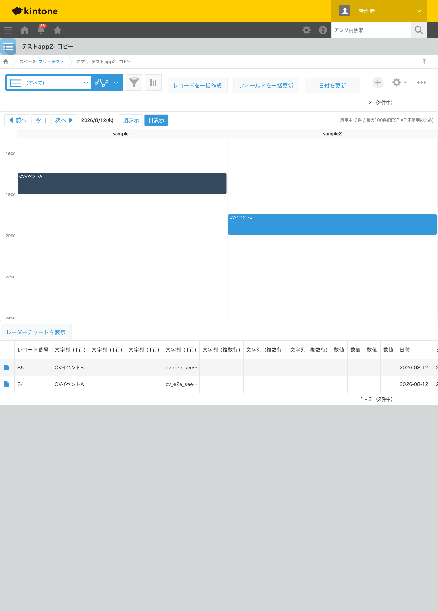
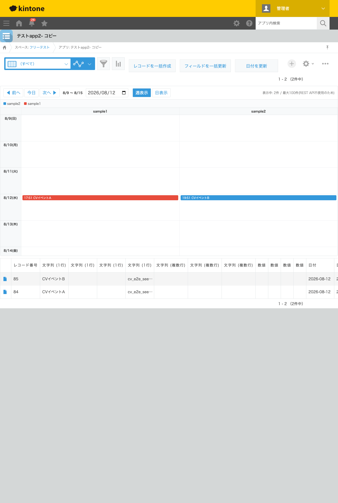
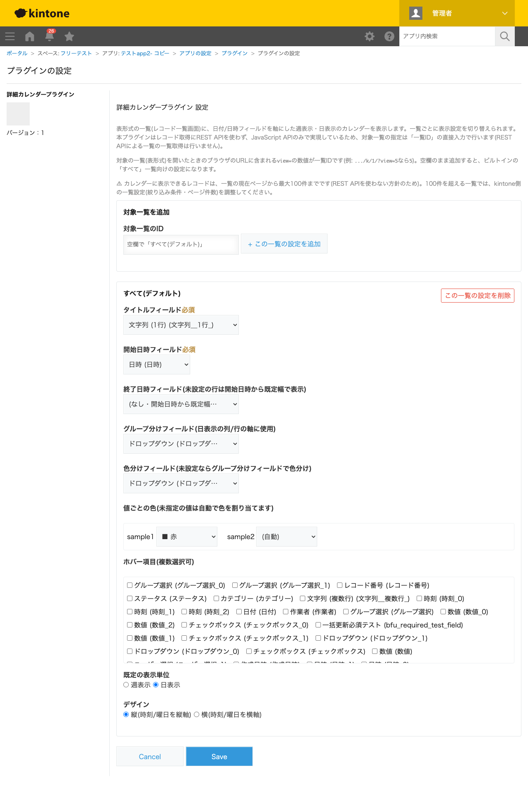

GovAppsプラグイン 安全性を確認できる無料kintoneプラグイン集
レコード一覧画面(表形式)に、日付/日時フィールドを軸にした週表示・日表示のカレンダーを表示するプラグインです。 グループ分けフィールドを指定して担当者・組織・ステータスなどの列(または行)に分けて表示でき、日表示だけでなく 週表示でもグループ×曜日の2軸で表示できます。色分けはグループ分けとは別のフィールド(ステータス/ドロップダウン/ ラジオボタン)を指定でき、固定8色から選ぶシンプルな方式で値ごとに色を指定でき、常時表示の凡例で色の意味を確認できます。 縦/横のデザインを選べ、任意の日付へワンクリックで移動できる日付ジャンプも備えています。イベントをクリックすると レコード詳細画面へ遷移します(表示専用、レコードの更新は行いません)。レコードの取得にREST APIを一切使わず JavaScript APIのみで実現しているため、表示できるのは一覧の現在ページから最大100件までです (この制限はカレンダーのツールバーに常時表示されます)。
グループ分けフィールドに担当者(ユーザー選択)を指定すると、日表示で担当者ごとの列(または行)に予定が並びます。誰が何時にどの予定を持っているかを一目で確認できます。
週表示でグループ分けフィールドを設定すると、日曜〜土曜の7日間とグループの2軸グリッドで表示されます。誰の予定が特定の曜日に偏っているか、来週の負荷分散を検討したい場合などに便利です(グループが1種類しかない場合は、従来どおりのシンプルな7セル表示になります)。
グループ分け(例: 担当者)とは別に、色分けフィールド(例: ステータス)を指定すると、色は色分けフィールドの値で決まります。固定8色から値ごとに任意の色を選ぶこともでき、カレンダーの上部には常に色の凡例(スウォッチ+ラベル)が表示されるため、色の意味を都度確認できます。
view=の数字が一覧IDです。対象は通常の一覧(表形式)・PC画面のみです。カレンダーは一覧本体(表)の上にあわせて表示され、一覧本体自体は非表示になりません。表示できるレコードは一覧の現在ページから最大100件までで、この制限はカレンダーのヘッダーに常時表示されます。100件を超える一覧では、kintone側の一覧設定(絞り込み条件・ページ件数)を調整してください。
kintoneセキュアコーディングガイドラインに沿って実装時にチェックしています。特に重要な点は次のとおりです。
app.record.index.showイベントのevent.records(JavaScript APIの一部)のみを使い、対象一覧の指定もREST APIでの一覧列挙を避け一覧IDの直接入力方式にしています。textContentへの代入、またはツールチップ用のtitleプロパティ代入で挿入しており、innerHTMLは一切使用していません。<select>、自由入力不可)で指定した色のみを使用し、CSSやHTMLへレコードの値そのものを埋め込むことはありません。設定データが直接改ざんされた場合に備え、色の値の形式を検証してから描画に使う多層防御も行っています。詳細な確認項目・確認日は下記GitHubのチェックリストに全項目を掲載しています。



このプラグインは表示専用であり、REST APIを一切実行しません。レコードの取得はapp.record.index.showイベントのevent.records(JavaScript APIの一部)のみを使用します。